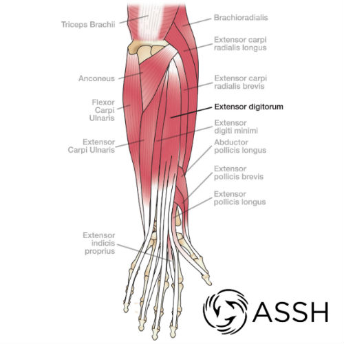
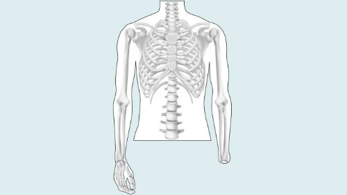

Handicap Apparatus for Normal Disarticulation (H.A.N.D.)
The H.A.N.D. is an artificial hand prosthesis that relies on use of preexisting tendons and muscles to control the fingers of the prosthesis. It addresses one of the most problematic issues of artificial prostheses: Unintuitive movement control. It will most benefit amputees with a fully intact forearm up to the wrist, from which the flexor digitorum profundus and flexor pollicis longus tendons can still be used.

The specific amputation required to qualify patients for use of this prosthesis is called wrist disarticulation. It involves the amputation of the hand at the wrist joint, ensuring that the muscles and tendons located within the arm are not damaged.
